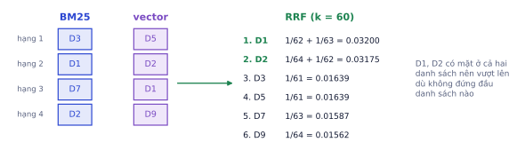
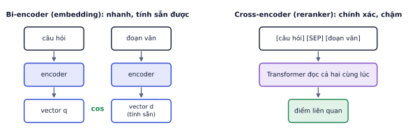
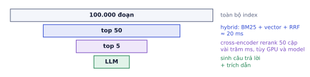
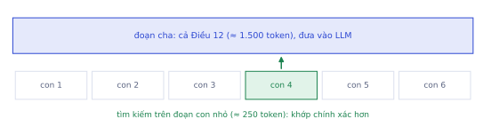

RAG cơ bản ở P4.2 thường đạt khoảng 60–70% câu trả lời tốt. Đi từ đó lên 85–90% là nhờ các kỹ thuật trong bài này: gộp nhiều cách tìm kiếm, xếp hạng lại bằng model mạnh hơn, viết lại câu hỏi, chunking thông minh, và biết khi nào cần GraphRAG hay để agent tự quyết định tìm kiếm. Quy tắc xuyên suốt: thêm từng kỹ thuật một và đo bằng bộ eval của Lab 6.
Bản đồ các kỹ thuật
Vì sao cần học
Có hàng chục "mẹo RAG" trên mạng. Thêm tất cả một lúc làm hệ thống chậm, đắt, và bạn không biết cái nào thật sự giúp. Mỗi kỹ thuật sửa một loại lỗi cụ thể; phân tích lỗi (P4.3) cho bạn biết cần loại nào.
Loại lỗi trong phân tích
Kỹ thuật sửa
Bỏ lỡ mã, tên riêng, số hiệu
hybrid search + RRF
Đoạn đúng có trong top-50 nhưng không trong top-5
reranker cross-encoder
Câu hỏi phụ thuộc hội thoại trước, quá ngắn, mơ hồ
viết lại câu hỏi, multi-query
Câu so sánh, nhiều ý
tách câu hỏi (decomposition)
Đoạn tìm được thiếu ngữ cảnh ("doanh thu tăng 12%" của công ty nào?)
contextual retrieval, parent–child
Câu hỏi tổng hợp toàn bộ kho tài liệu
GraphRAG, tóm tắt phân cấp
Cần tìm nhiều lần, nhiều nguồn
agentic RAG
Hybrid search với Reciprocal Rank Fusion
Vì sao cần học
BM25 và vector search bắt những loại câu hỏi khác nhau (P4.2). Gộp chúng gần như luôn tăng recall, nhưng gộp sai cách (cộng thẳng điểm) có thể làm tệ hơn cả từng cách riêng.
BM25 cho điểm từ 0 tới vài chục, cosine từ −1 tới 1, và phân phối điểm thay đổi theo từng câu hỏi: không cộng thẳng được. Reciprocal Rank Fusion (RRF) chỉ dùng thứ hạng:
RRF(d) = Σ_{mỗi danh sách r} 1 / (k + rank_r(d)) k thường = 60; đoạn không có trong danh sách thì không cộng
Ví dụ từng bước
BM25 trả về [D3, D1, D7, D2], vector trả về [D5, D2, D1, D9]:

D1 và D2 không đứng đầu danh sách nào, nhưng có mặt ở cả hai nên được xếp trên D3 và D5 (mỗi đoạn chỉ đứng đầu một danh sách).
Ý nghĩa: một đoạn được cả hai cách tìm kiếm cùng đánh giá cao là đoạn đáng tin hơn đoạn chỉ một cách thích.
defrrf(lists,k=60):score={}forlstinlists:forrank,docinenumerate(lst,start=1):score[doc]=score.get(doc,0)+1/(k+rank)returnsorted(score,key=score.get,reverse=True)# ví dụ nhỏ: hai bảng xếp hạng của cùng một câu hỏibm25_top50=["đổi trả 7 ngày","phí ship","bảo hành 12 tháng","đổi size"]vector_top50=["đổi size","đổi trả 7 ngày","hoàn tiền","phí ship"]candidates=rrf([bm25_top50,vector_top50])[:50]candidates# tài liệu đứng cao ở cả hai danh sách được đẩy lên đầu
Hằng số k làm mượt: k lớn thì chênh lệch giữa hạng 1 và hạng 10 nhỏ đi, kết quả dựa nhiều vào việc "có mặt ở bao nhiêu danh sách". RRF không cần chuẩn hóa điểm, gần như không có tham số, và rất khó làm tệ hơn từng danh sách riêng, nên là lựa chọn mặc định.
Đào sâu thêm
Gộp có trọng số. Nếu bộ eval cho thấy vector search tốt hơn hẳn BM25 trên dữ liệu của bạn, có thể nhân trọng số cho từng danh sách: RRF(d) = Σ wᵣ / (k + rankᵣ(d)). Chỉ tune trọng số này trên tập eval riêng (không phải tập báo cáo cuối), vì rất dễ overfit vào vài chục câu hỏi.
Reranker cross-encoder
Vì sao cần học
Embedding nén cả một đoạn văn thành một vector trước khi biết câu hỏi là gì, nên mất chi tiết. Reranker đọc câu hỏi và đoạn cùng lúc, nhìn được từng từ của câu hỏi khớp với từng từ của đoạn. Trong nhiều bộ dữ liệu, thêm reranker là cải thiện lớn nhất sau hybrid.

Bi-encoder mã hóa câu hỏi và đoạn riêng rẽ, vector đoạn tính sẵn một lần. Cross-encoder ghép cặp câu hỏi–đoạn vào cùng một Transformer cho mỗi lần chấm.
Bi-encoder (embedding)
Cross-encoder (reranker)
Đầu vào
câu hỏi và đoạn riêng rẽ
cặp (câu hỏi, đoạn) cùng lúc
Tính sẵn được
có: vector đoạn tính một lần
không: phải chạy cho mỗi cặp
Chi phí khi có 100.000 đoạn
1 lần encode câu hỏi + tìm vector
100.000 lần chạy model: không khả thi
Độ chính xác xếp hạng
khá
tốt hơn rõ rệt
Quy trình hai tầng
Vì cross-encoder chậm, ta chỉ dùng nó trên một danh sách ngắn:

Tầng 1 lọc nhanh từ toàn bộ index xuống vài chục ứng viên; tầng 2 chấm kỹ để chọn vài đoạn tốt nhất đưa vào LLM.
# Cần mạng: tải reranker từ Hugging Face, chạy trên Colabfromsentence_transformersimportCrossEncoderreranker=CrossEncoder("BAAI/bge-reranker-v2-m3")pairs=[(question,chunks[i]["text"])foriincandidates]# 50 cặpscores=reranker.predict(pairs,batch_size=16)top5=[candidates[i]foriinscores.argsort()[::-1][:5]]
Không chạy trên trangCần mạng: tải reranker từ Hugging Face, chạy trên ColabMở trên Colab ↗
Số ứng viên đưa vào reranker là một đánh đổi: nhiều hơn thì recall cao hơn (đoạn đúng có cơ hội lọt vào), nhưng độ trễ tăng tuyến tính. Đo recall@50 của tầng 1: nếu đoạn đúng thường ở hạng 30–50, tăng lên 100 ứng viên; nếu hầu như luôn trong top 20, giảm xuống để nhanh hơn.
Lỗi hay gặp
Reranker không hiểu tiếng Việt. Nhiều reranker phổ biến chỉ train trên tiếng Anh; dùng với tiếng Việt có thể còn tệ hơn không rerank. Chọn reranker đa ngôn ngữ và đo trên bộ eval của bạn, như với model embedding.
Biến đổi câu hỏi
Vì sao cần học
Câu người dùng gõ thường không giống văn phong tài liệu: ngắn, viết tắt, dựa vào hội thoại trước. Viết lại câu hỏi trước khi tìm kiếm là cách rẻ để khớp tốt hơn với tài liệu.
Kỹ thuật
Làm gì
Khi nào dùng
Query rewriting
LLM viết lại thành câu hỏi đầy đủ, độc lập
hội thoại nhiều lượt
Multi-query
LLM sinh 3–5 cách hỏi khác, tìm cho từng cách rồi RRF
câu hỏi mơ hồ, nhiều khía cạnh
Decomposition
tách câu so sánh/phức hợp thành câu con
"So sánh A và B"
HyDE
LLM viết một câu trả lời giả định, dùng nó để tìm
câu hỏi rất khác văn phong tài liệu
Ví dụ từng bước
Hội thoại:
Người dùng: Bàn trang điểm gỗ sồi bảo hành bao lâu?
Trợ lý: Bàn trang điểm gỗ sồi được bảo hành 12 tháng [1].
Người dùng: Thế còn loại MDF?
Tìm kiếm thẳng "Thế còn loại MDF?" gần như vô vọng. Rewriting biến nó thành "Bàn trang điểm gỗ MDF được bảo hành bao lâu?".
Decomposition với "So sánh chính sách đổi trả của bàn và ghế": tách thành "chính sách đổi trả của bàn" và "chính sách đổi trả của ghế", tìm riêng, gộp đoạn cho LLM so sánh.
HyDE với "làm sao để bàn không bị cong vênh": LLM viết đoạn giả định "Để tránh cong vênh, đặt bàn nơi khô ráo, tránh ánh nắng trực tiếp…", đoạn này giống văn phong hướng dẫn bảo quản trong tài liệu hơn câu hỏi gốc.
Mỗi kỹ thuật thêm ít nhất một cuộc gọi LLM: tốn thêm vài trăm ms và tiền. Dùng model nhỏ, nhanh cho bước này, và đo xem có đáng không.
Lỗi hay gặp
Viết lại làm sai nghĩa. LLM viết lại có thể "sửa" mã sản phẩm, đổi số liệu, hoặc thêm giả định. Luôn tìm kiếm với cả câu gốc và câu viết lại (rồi RRF), và giữ nguyên các chuỗi như mã, số trong prompt viết lại.
Chunking nâng cao
Vì sao cần học
Một đoạn bị cắt khỏi tài liệu thường mất ngữ cảnh: "Doanh thu tăng 12% so với cùng kỳ" mà không biết công ty nào, quý nào. Embedding của đoạn đó không khớp với câu hỏi "doanh thu quý 2 của công ty X", dù đó chính là câu trả lời.
Theo cấu trúc, kèm đường dẫn tiêu đề
Tách theo tiêu đề, điều khoản, hàm (với code). Giữ đường dẫn tiêu đề ("Chương 3 > Điều 12 > Khoản 2") trong nội dung đoạn để đoạn tự mang ngữ cảnh.
Parent–child
Tìm trên đoạn nhỏ (khớp chính xác, embedding không bị pha loãng), nhưng đưa vào LLM đoạn cha lớn hơn chứa nó (đủ ngữ cảnh để trả lời).

Tìm thấy "con 4", nhưng đưa cả Điều 12 cho LLM. Nhiều đoạn con cùng một cha thì chỉ đưa cha một lần.
Contextual retrieval
Trước khi embedding (và trước khi đưa vào BM25), dùng LLM viết 1–2 câu mô tả đoạn nằm ở đâu trong tài liệu, ghép vào đầu đoạn:
[Ngữ cảnh: Đoạn này thuộc báo cáo kết quả kinh doanh quý 2/2026 của Công ty Nội thất An Phát,
mục Doanh thu theo khu vực.]
Doanh thu tăng 12% so với cùng kỳ, chủ yếu nhờ các cửa hàng miền Nam...
Chi phí: một lần gọi LLM cho mỗi đoạn khi xây index (không phải mỗi câu hỏi). Với prompt caching (tài liệu gốc được cache, chỉ đoạn thay đổi), chi phí này thường chấp nhận được. Đổi lại, các đoạn "mồ côi ngữ cảnh" trở nên tìm được.
GraphRAG và agentic RAG
Vì sao cần học
Một số câu hỏi không có câu trả lời nằm trong bất kỳ đoạn nào: "Các chủ đề khách hàng phàn nàn nhiều nhất năm nay là gì?" cần đọc toàn bộ kho. Một số câu cần nhiều bước tìm: tìm A, từ A mới biết cần tìm B. RAG một lần không giải được những loại này.
GraphRAG
Dùng LLM trích xuất thực thể (người, sản phẩm, công ty) và quan hệ từ tài liệu thành đồ thị tri thức, gom cụm các thực thể liên quan, và viết tóm tắt cho từng cụm.
Mạnh với
Ví dụ
Câu hỏi tổng hợp toàn cục
"Các chủ đề chính trong 500 báo cáo là gì?"
Câu hỏi nhiều bước nhảy
"Nhà cung cấp gỗ của sản phẩm bị phàn nàn nhiều nhất là ai?"
Đắt khi xây dựng (gọi LLM trên toàn bộ kho), khó cập nhật, nên chỉ dùng khi RAG thường thất bại ở đúng loại câu hỏi đó.
Agentic RAG
Cho agent (P4.4) công cụ tìm kiếm thay vì tìm một lần cố định. Agent tự quyết định tìm gì, tìm lại khi kết quả chưa đủ, tìm trong nhiều nguồn (tài liệu, database đơn hàng, web).
Câu hỏi: "Đơn DH1024 có được đổi không?"
Agent: search_orders("DH1024") → giao ngày 20/10, sản phẩm bàn MDF
search_docs("chính sách đổi trả bàn MDF") → 30 ngày, hàng còn nguyên tem
→ hôm nay 05/11, đã 16 ngày: còn trong hạn, nếu còn nguyên tem.
Linh hoạt nhất, nhưng chậm (nhiều vòng gọi), đắt, và khó đoán hơn. Thường dùng như lớp ngoài cùng: câu hỏi thường đi đường RAG nhanh, câu phức tạp mới chuyển sang agent.
Thử nghiệm có kiểm soát: bảng ablation
Vì sao cần học
"Thêm reranker làm hệ thống tốt hơn" chỉ đáng tin khi bạn đo trước và sau trên cùng bộ eval, chỉ thay đổi một thứ mỗi lần. Bảng ablation là cách trình bày chuẩn, và là thứ nhà tuyển dụng muốn thấy trong README dự án RAG.
Ví dụ từng bước
Ví dụ minh họa dạng bảng (số liệu giả định để thấy cách đọc; của bạn sẽ khác):
Cấu hình
Recall@5
Điểm judge (0–3)
Độ trễ p50
Chi phí / 1.000 câu
Vector, chunk 500
0.71
2.05
0.9 s
1.8 USD
+ BM25, RRF
0.79
2.22
0.9 s
1.8 USD
+ reranker (50 → 5)
0.86
2.41
1.2 s
1.8 USD
+ query rewriting
0.88
2.44
1.7 s
2.3 USD
+ contextual retrieval
0.90
2.47
1.7 s
2.3 USD (+ chi phí xây index)
Đọc bảng: hybrid và reranker cho cải thiện lớn với chi phí nhỏ; query rewriting thêm 2 điểm recall nhưng tăng độ trễ 40%: có thể không đáng với chatbot cần nhanh. Mỗi dòng nên kèm khoảng tin cậy (P4.3) khi bộ eval nhỏ.
Ghi nhớ: thứ tự nên thử: hybrid + RRF → reranker → chunking tốt hơn → query rewriting → contextual retrieval → agentic/GraphRAG. Dừng khi bộ eval nói đã đủ tốt.
Tự kiểm tra nhanh
Hai danh sách, k = 60. Đoạn P đứng hạng 1 ở danh sách thứ nhất và không có ở danh sách thứ hai. Đoạn Q đứng hạng 5 ở cả hai.
Tóm tắt bài và thuật ngữ
Kỹ thuật
Sửa lỗi gì
Chi phí thêm
Hybrid + RRF
bỏ lỡ từ khóa hoặc đồng nghĩa
thấp
Reranker
đoạn đúng không đủ cao trong danh sách
trung bình (độ trễ)
Viết lại câu hỏi
câu ngắn, phụ thuộc hội thoại, mơ hồ
1 lần gọi LLM mỗi câu
Parent–child
đoạn tìm được thiếu ngữ cảnh
thấp
Contextual retrieval
đoạn mồ côi ngữ cảnh
1 lần gọi LLM mỗi đoạn (khi xây index)
GraphRAG
câu hỏi tổng hợp toàn cục, nhiều bước nhảy
cao
Agentic RAG
cần nhiều lần tìm, nhiều nguồn
cao, khó đoán
Thuật ngữ
Nghĩa
RRF
gộp danh sách theo thứ hạng: Σ 1/(k + hạng)
bi-encoder
mã hóa câu hỏi và đoạn riêng rẽ thành vector
cross-encoder / reranker
chấm cặp (câu hỏi, đoạn) bằng một Transformer
two-stage retrieval
tìm rộng nhanh rồi xếp hạng lại kỹ
query rewriting / multi-query
viết lại câu hỏi / sinh nhiều cách hỏi
decomposition
tách câu hỏi phức hợp thành câu con
HyDE
tìm bằng câu trả lời giả định
parent–child chunking
tìm trên đoạn con, trả về đoạn cha
contextual retrieval
thêm mô tả ngữ cảnh vào đầu đoạn trước khi index
knowledge graph / GraphRAG
đồ thị thực thể–quan hệ / RAG trên đồ thị đó
agentic RAG
agent tự quyết định tìm kiếm
ablation
bỏ/thêm từng thành phần để đo đóng góp của nó
Ô tự chấm đã giải đúng0 / 5
Bài 1
Tính RRF
tính tay
k = 60. Danh sách vector: [X, Y, Z]. Danh sách BM25: [Y, W, X].
Lời giải
X: hạng 1 và 3 → 1/61 + 1/63 ≈ 0.03227. Y: hạng 2 và 1 → 1/62 + 1/61 ≈ 0.03252. Z chỉ có ở một danh sách → 1/63 ≈ 0.01587, W tương tự 1/62. Thứ tự cuối: Y, X, W, Z. Y thắng X dù X đứng đầu danh sách vector, vì Y ổn định ở cả hai.
Bài 2
Độ trễ của reranker
tính tay
Rerank 50 ứng viên, chạy theo batch 10 cặp, mỗi batch 40 ms trên GPU.
Lời giải
5 batch × 40 ms = 200 ms. 200 ứng viên tốn 800 ms, thường là quá chậm cho chat. Cân bằng: tìm rộng vừa đủ (30–100) để không bỏ sót, rồi rerank.
Bài 3
Chọn kỹ thuật
khái niệm
Chọn kỹ thuật phù hợp nhất cho mỗi tình huống và giải thích:
Chatbot hỗ trợ, khách hỏi "còn màu trắng không?" sau khi đã hỏi về một mẫu bàn.
Tài liệu pháp lý, đoạn tìm được thường đúng điều khoản nhưng thiếu phần định nghĩa ở đầu văn bản.
"Tóm tắt các vấn đề khách hàng phàn nàn nhiều nhất trong 3.000 phiếu hỗ trợ."
Người dùng hỏi mã lỗi và tên linh kiện chính xác.
Lời giải
Query rewriting theo lịch sử hội thoại: "Bàn trang điểm mẫu X còn màu trắng không?".
Contextual retrieval hoặc parent–child để đoạn mang theo ngữ cảnh của văn bản.
GraphRAG hoặc map-reduce tóm tắt theo cụm: câu hỏi toàn cục, top-k không đủ.
Hybrid search có BM25: từ khóa chính xác.
Bài 4
Bảng ablation
khái niệm
Một nhóm báo cáo: "Hệ RAG mới đạt 88%, so với 64% của bản cũ." Bản mới thêm cùng lúc hybrid, reranker, query rewriting, chunking mới và đổi LLM. Vì sao báo cáo này chưa đủ để ra quyết định? Thiết kế bảng ablation cần có.
Lời giải
Không biết thay đổi nào tạo ra cải thiện, thay đổi nào vô ích nhưng tốn tiền và độ trễ, hoặc thậm chí làm tệ đi bị che bởi thay đổi khác. Bảng ablation: mỗi dòng thêm một kỹ thuật vào cấu hình trước (baseline → +hybrid → +reranker → +chunking → +rewriting → +LLM mới), các cột recall@5, điểm judge, độ trễ p95, chi phí mỗi câu. Thêm dòng "bản mới bỏ đi từng kỹ thuật" để kiểm tra chéo.
Bài 5
Pipeline hai tầng
code
Viết retrieve(question, k_final=5, k_wide=50): tìm vector và BM25 mỗi bên 50 kết quả, gộp bằng RRF, rerank 50 ứng viên đầu bằng cross-encoder, trả về top 5. Dùng index, bm25, emb, tokenize, chunks từ Lab 5.
Code tham khảo
# Cần mạng và index ở bài P4.2: chạy trên Colabimportnumpyasnpfromsentence_transformersimportCrossEncoderreranker=CrossEncoder("BAAI/bge-reranker-v2-m3")defrrf(lists,k=60):score={}forlstinlists:forrank,dinenumerate(lst,1):score[d]=score.get(d,0)+1/(k+rank)returnsorted(score,key=score.get,reverse=True)defretrieve(question,k_final=5,k_wide=50):qv=emb.encode([question],normalize_embeddings=True).astype("float32")vec=list(index.search(qv,k_wide)[1][0])kw=list(np.argsort(-bm25.get_scores(tokenize(question)))[:k_wide])cand=rrf([vec,kw])[:k_wide]scores=reranker.predict([(question,chunks[i]["text"])foriincand])return[cand[i]foriinnp.argsort(-scores)[:k_final]]
Không chạy trên trangCần mạng và index ở bài P4.2: chạy trên ColabMở trên Colab ↗
Bài 6
Viết lại câu hỏi để tìm được nhiều hơn
ứng dụng
Dùng: biến đổi câu hỏi (multi-query, mở rộng từ đồng nghĩa), gộp kết quả bằng RRF.
Người dùng hỏi bằng từ ngữ đời thường, còn tài liệu viết bằng từ chuyên môn. Thay vì một truy vấn, sinh 3 biến thể (ở đây bằng bảng từ đồng nghĩa; thực tế nhờ LLM viết), tìm top-3 cho mỗi biến thể bằng BM25 đơn giản (đếm từ chung có trọng số), gộp bằng RRF, và so recall@1 (tài liệu đúng đứng đầu) với chỉ dùng câu gốc trên 5 câu hỏi.
importmathdocs=["Thời hạn đổi trả là 7 ngày kể từ khi nhận hàng","Phí vận chuyển nội thành 30.000 đồng","Hoàn tiền qua tài khoản ngân hàng trong 5 ngày làm việc","Bảo hành khung bàn 12 tháng","Đơn vị vận chuyển giao hàng từ 8 giờ đến 20 giờ","Hủy đơn miễn phí trước khi đơn được bàn giao vận chuyển"]hoi=[("bao lâu thì được trả tiền lại",2),("ship nội thành bao nhiêu tiền",1),("mấy giờ shipper tới",4),("mua rồi có được trả lại không",0),("không muốn mua nữa thì bỏ đơn được không",5)]DONG_NGHIA={"trả tiền lại":"hoàn tiền","ship":"phí vận chuyển","shipper":"đơn vị vận chuyển giao hàng","trả lại":"đổi trả","bỏ đơn":"hủy đơn","mấy giờ":"từ giờ đến giờ"}toks=[d.lower().split()fordindocs]N=len(docs)idf={w:math.log(1+N/sum(wintfortintoks))fortintoksforwint}deftim(q,k=3):diem=[sum(idf.get(w,0)forwinset(q.lower().split())ifwint)fortintoks]returnsorted(range(N),key=lambdai:-diem[i])[:k]defbien_the(q):# TODO: trả về [câu gốc, câu thay cụm đồng nghĩa, câu gốc + cụm chuyên môn]return[q]
Code của bạn
Viết code vào chỗ trống rồi bấm Chạy.
Gợi ý
Biến thể 2: lần lượt q.replace(cum, thay) với mọi cụm có trong câu. Biến thể 3: nối thêm các cụm thay vào cuối câu gốc. RRF: điểm tài liệu = tổng 1 / (60 + hạng) qua các danh sách.
bao lâu thì được trả tiền lại gốc [0, 2, 5] | multi-query [2, 0, 5] | đúng 2
ship nội thành bao nhiêu tiền gốc [1, 2, 0] | multi-query [1, 5, 4] | đúng 1
mấy giờ shipper tới gốc [4, 0, 1] | multi-query [4, 1, 5] | đúng 4
mua rồi có được trả lại không gốc [0, 5, 1] | multi-query [0, 5, 1] | đúng 0
không muốn mua nữa thì bỏ đơn được không gốc [5, 4, 0] | multi-query [5, 4, 0] | đúng 5
recall@1: gốc 0.80 → multi-query 1.00
Mỗi biến thể tốn thêm một lần tìm kiếm (rẻ) và, với LLM viết lại, một lời gọi model (vài trăm ms). Đáng làm khi người dùng hay hỏi bằng ngôn ngữ đời thường khác hẳn văn bản tài liệu, và luôn đo lại bằng bộ eval trước khi giữ.
Bài 7
Chunking theo cấu trúc tài liệu
ứng dụng
Dùng: chunking nâng cao: cắt theo tiêu đề, gắn đường dẫn tiêu đề (contextual chunk), metadata.
Tài liệu chính sách viết bằng Markdown có nhiều mục con trùng tên ("Thời hạn" xuất hiện ở cả mục đổi trả và mục bảo hành). Viết chunk_markdown(md) cắt theo tiêu đề ## và ###, mỗi đoạn mang đường dẫn tiêu đề (ví dụ Bảo hành > Thời hạn) gắn vào đầu nội dung. So với cắt thô (mỗi đoạn văn một chunk, không tiêu đề): câu hỏi "thời hạn bảo hành bao lâu" có tìm đúng đoạn không?
md="\n".join(["# Chính sách","## Đổi trả","### Thời hạn","Trong 7 ngày kể từ khi nhận hàng.","### Điều kiện","Sản phẩm còn nguyên tem, chưa qua sử dụng.","## Bảo hành","### Thời hạn","12 tháng cho khung, 6 tháng cho phụ kiện.","### Nơi nhận","Tại cửa hàng hoặc gửi qua bưu điện.",])defchunk_markdown(md):# TODO: trả về list {"duong_dan": "Bảo hành > Thời hạn", "text": "Bảo hành > Thời hạn: 12 tháng ..."}return[]deftim(q,chunks):tu=set(q.lower().split())returnmax(chunks,key=lambdac:len(tu&set(c["text"].lower().replace(">"," ").replace(":"," ").split())))
Code của bạn
Viết code vào chỗ trống rồi bấm Chạy.
Gợi ý
Duyệt từng dòng, giữ một list duong các tiêu đề hiện tại: gặp ## X thì duong = [X], gặp ### Y thì duong = duong[:1] + [Y]. Dòng nội dung thì tạo chunk với " > ".join(duong).
Code tham khảo
defchunk_markdown(md):duong,out=[],[]forlineinmd.splitlines():ifline.startswith("### "):duong=duong[:1]+[line[4:].strip()]elifline.startswith("## "):duong=[line[3:].strip()]elifline.strip()andnotline.startswith("#"):dd=" > ".join(duong)out.append({"duong_dan":dd,"text":f"{dd}: {line.strip()}"})returnoutchunks=chunk_markdown(md)tho=[{"duong_dan":"","text":l}forlinmd.splitlines()ifl.strip()andnotl.startswith("#")]forcinchunks:print(c["text"])print("cấu trúc →",tim("thời hạn bảo hành bao lâu",chunks)["text"])print("cắt thô →",tim("thời hạn bảo hành bao lâu",tho)["text"])
Kết quả khi chạy
Đổi trả > Thời hạn: Trong 7 ngày kể từ khi nhận hàng.
Đổi trả > Điều kiện: Sản phẩm còn nguyên tem, chưa qua sử dụng.
Bảo hành > Thời hạn: 12 tháng cho khung, 6 tháng cho phụ kiện.
Bảo hành > Nơi nhận: Tại cửa hàng hoặc gửi qua bưu điện.
cấu trúc → Bảo hành > Thời hạn: 12 tháng cho khung, 6 tháng cho phụ kiện.
cắt thô → Trong 7 ngày kể từ khi nhận hàng.
Đoạn "12 tháng cho khung…" tự nó không nhắc gì tới "bảo hành" hay "thời hạn", nên cắt thô không tìm được. Gắn đường dẫn tiêu đề vào đầu chunk (khi embedding và khi đưa cho LLM) giúp mỗi đoạn "tự giải thích", và metadata duong_dan dùng luôn làm trích dẫn.
Bài 8
Hai tầng: lọc rộng rồi xếp lại kỹ
ứng dụng
Dùng: reranker: tầng 1 nhanh lấy nhiều ứng viên, tầng 2 chậm nhưng chính xác chấm lại; ngân sách độ trễ.
Tầng 1 (giả lập embedding) chấm nhanh nhưng nhiễu; tầng 2 (giả lập cross-encoder) chấm chính xác hơn nhưng mỗi tài liệu mất 15 ms. Với 50 truy vấn, mỗi truy vấn 200 tài liệu trong đó đúng 1 tài liệu liên quan, so precision@3 khi: chỉ dùng tầng 1; tầng 1 lấy top-20 rồi tầng 2 xếp lại. Tính thêm độ trễ tầng 2 cho mỗi truy vấn.
importnumpyasnprng=np.random.default_rng(0)Q,D,MS_MOI_DOC=50,200,15lien_quan=rng.integers(0,D,Q)# chỉ số tài liệu đúng của mỗi truy vấnthat=np.zeros((Q,D));that[np.arange(Q),lien_quan]=1tang1=that*1.0+rng.normal(0,0.6,(Q,D))# nhanh, nhiễu nhiềutang2=that*1.0+rng.normal(0,0.15,(Q,D))# chậm, ít nhiễu# TODO: hit3_tang1 (tỉ lệ truy vấn có tài liệu đúng trong top-3 tầng 1), hit3_hai_tang, do_tre
Code của bạn
Viết code vào chỗ trống rồi bấm Chạy.
Gợi ý
Top-k của tầng 1: np.argsort(-tang1[q])[:k]. Hai tầng: lấy ung_vien = top-20 tầng 1, sắp lại theo tang2[q, ung_vien], lấy 3 đầu. Tài liệu đúng không có trong top-20 thì tầng 2 cũng không cứu được.
Code tham khảo
defhit3(q,hai_tang):ung_vien=np.argsort(-tang1[q])[:20ifhai_tangelse3]ifhai_tang:ung_vien=ung_vien[np.argsort(-tang2[q,ung_vien])][:3]returnlien_quan[q]inung_vienhit3_tang1=np.mean([hit3(q,False)forqinrange(Q)])hit3_hai_tang=np.mean([hit3(q,True)forqinrange(Q)])trong_top20=np.mean([lien_quan[q]innp.argsort(-tang1[q])[:20]forqinrange(Q)])do_tre=20*MS_MOI_DOCprint(f"chỉ tầng 1: {hit3_tang1:.2f} | hai tầng: {hit3_hai_tang:.2f} (trần: {trong_top20:.2f} có trong top-20) | +{do_tre} ms")
Kết quả khi chạy
chỉ tầng 1: 0.28 | hai tầng: 0.56 (trần: 0.56 có trong top-20) | +300 ms
Tầng 2 chỉ xếp lại được những gì tầng 1 đưa lên, nên "trần" của hệ hai tầng là recall@20 của tầng 1. Chọn số ứng viên là đánh đổi: nhiều hơn thì trần cao hơn nhưng chậm hơn (200 tài liệu × 15 ms = 3 giây, quá chậm cho chat).
Nâng cấp hệ RAG của Lab 5
Các bước
Lấy cấu hình tốt nhất của Lab 6 làm baseline. Chạy lại bộ eval 50 câu, ghi số liệu.
Thêm lần lượt, mỗi lần chạy lại eval:
- Hybrid + RRF (thay cho xen kẽ đơn giản)
- Reranker cross-encoder (tìm rộng 50, giữ 5)
- Chunking theo cấu trúc với đường dẫn tiêu đề
- Query rewriting cho câu hỏi phụ thuộc hội thoại (thêm 5 câu hỏi nối tiếp vào bộ eval)
- Contextual retrieval cho 20% tài liệu khó nhất (tùy chọn)
Mỗi bước ghi: recall@5, điểm judge, độ trễ p95, chi phí mỗi câu.
Chọn cấu hình cuối cân bằng chất lượng, độ trễ và chi phí.
Mẫu bảng ablation
Cấu hình
Recall@5
Judge
p95 (s)
Chi phí/câu
Baseline Lab 6
+ hybrid RRF
+ reranker
+ chunking cấu trúc
+ query rewriting
Xong khi
Recall@5 và điểm judge của cấu hình cuối cao hơn baseline.
Có bảng ablation đủ các dòng, kèm nhận xét kỹ thuật nào đáng giá nhất.
Xong bài khiRecall@5 và độ chính xác câu trả lời tăng so với RAG cơ bản, có bảng ablation cho từng kỹ thuật.